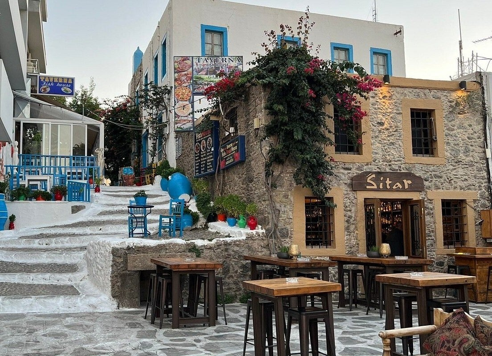

De haltepunten
1. Kasteel Neratzia
2. Palm Tree Lane
3. I love Kos
4. Witte trappen
5. Oude stad
6. Agora
7. Agia Paraskevi
8. Odeon
9. Boom van Hippocrates
10. Asklepion (buiten de stad)

Een wandeling door Kos-stad, van de haven naar het centrum. Het Asklepion ligt buiten de stad en is een stuk verder. Doe het in de ochtend of laat op de dag, niet in de volle zon.
1. Kasteel Neratzia
2. Palm Tree Lane
3. I love Kos
4. Witte trappen
5. Oude stad
6. Agora
7. Agia Paraskevi
8. Odeon
9. Boom van Hippocrates
10. Asklepion (buiten de stad)
Op de pagina Radar Kos-stad (vrije route) staan dezelfde plekken als losse punten. Met de auto is er een route van 1 dag en van 2 dagen.